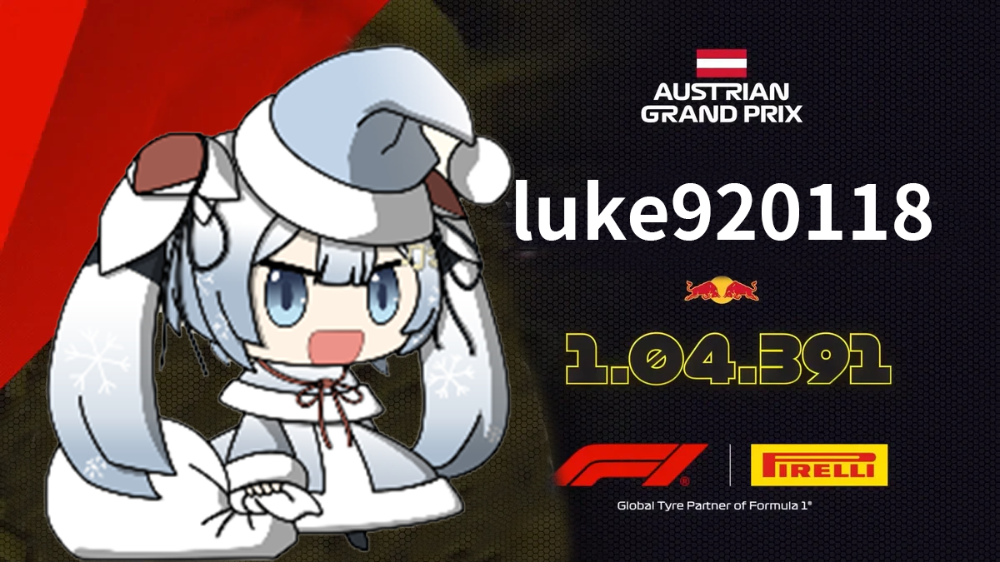

我叫朱祉霖 aka 路克
號稱裁判長暴君，專門擔任6TMT裁判長然後壓榨所有裁判。
除此之外，我的專長是數位控制圖騰柱無橋式功率因數修正轉換器以及Verilog。

關於我
| 專長 | 數位控制圖騰柱無橋式功率因數修正轉換器、Verilog |
| 學歷 | B.S. in Electrical Engineering, National Cheng Kung University. |
| xy889990@gmail.com | |
| TA課程 | 數位電源控制電路與系統實作專題 |
| osu! | Luke920118 |
我的實驗室
國立成功大學電機所VLSI/CAD組 混合訊號積體電源控管設計實驗室
地址：台南市東區大學路1號成功大學自強校區奇美樓三樓95315室
這裡是你該知道我的個性和事蹟

我是css大師，林尚廷是我的學生。
我工數很強，教了不少數學系的人。
你要吃路克火鍋嗎?

@Runick Fountain 請養成認真且仔細看公告的習慣， 不要直接按読にする還有走馬看花 🚶🏇👀🌸
所以你知道我叫什麼名字嗎?
我是機率鬼才，天神下凡，我來展現我的機率筆記